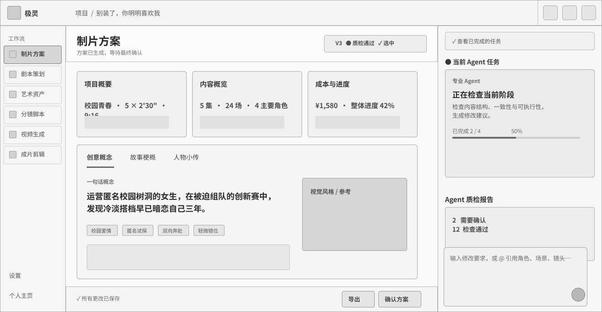
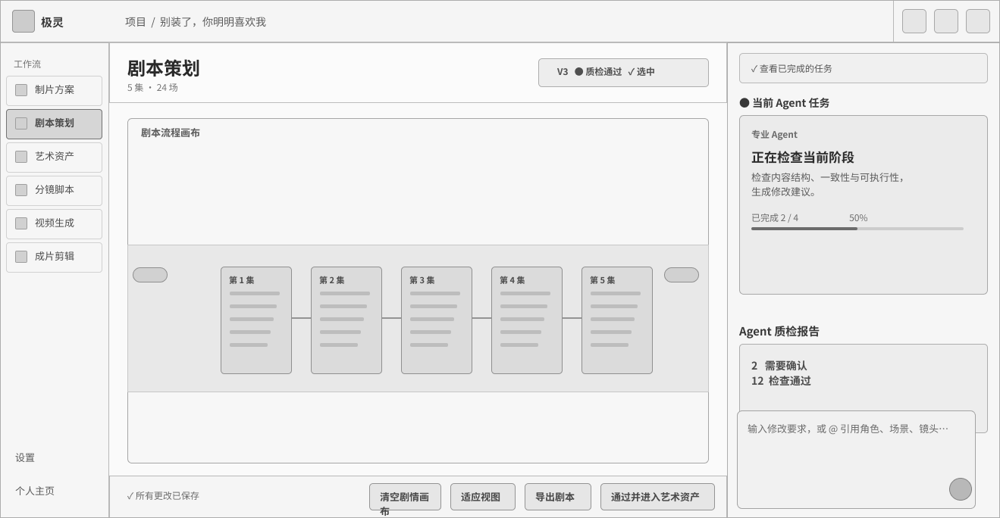
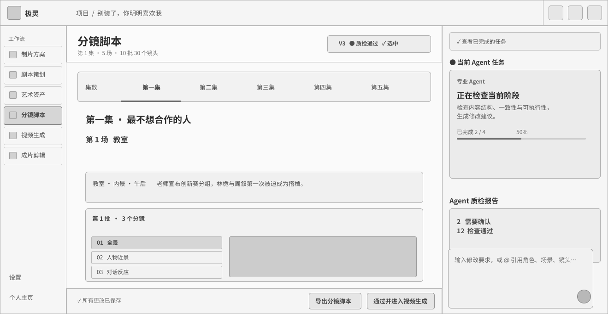

← All work
AI Product Design Internship · Shipped Product
Geeelink
Transforming a fragmented AI video-generation process into a trackable, reviewable, and editable production workflow.
- Context
- 4-month internship on a B2B AI video production platform
- Team
- Product managers, engineers, designers, and general manager
- My role
- Product design intern · Independent owner of the high-fidelity UI
- Result
- Interaction model adopted, engineered, and launched
01 · Workflow problem
Generation was only one part of the job.
Professional AI-video production requires teams to move across prompting, generation, asset selection, review, revision, and delivery. When those states are fragmented, people lose context and struggle to understand what changed.
The product challenge was to make the whole production state visible, not simply add another generation control.
Brief→Production plan→Script→Assets→Storyboard→Generate & edit

02 · Research
Make hidden coordination work observable.
I interviewed nine internal production specialists who also use AI tools to make short-form dramas. Their work spanned project management, art, storyboarding, post-production, and direction, giving me a view of the hand-offs behind a complete production rather than feedback on isolated screens.
Three real-project workflow tests and structured competitor testing exposed recurring problems with version awareness, review context, editable states, and hand-offs. I translated the evidence into a shared workflow model that product and engineering could evaluate together.
- 01Track where an output came from and which inputs shaped it.
- 02Keep review comments connected to the exact version and state.
- 03Make the next action clear without hiding system uncertainty.
REDACTED
Raw transcripts, client details, and production data are intentionally omitted. The screens preserve the decision logic: stage, source, review context, quality status, and next action.


03 · MVP decision
Protect the core workflow from premature audio scope.
The team considered standalone AI voice and BGM generation. I recommended moving both out of the MVP after reviewing production constraints. Character voices could not yet remain consistent across a complete video, while music generated for short clips could not reliably sustain narrative continuity.
The production workflow needed stability and control before it needed another generation tool.
Generated clips kept their existing audio, which was usually strong and matched the scene. Creators could add a complete soundtrack after editing by uploading their own music or importing music made in a dedicated AI platform.
Stabilize the video production chain.
Import complete BGM after editing.
04 · Product direction
From isolated outputs to a controllable production system.
I defined the product around one persistent production model: each stage has an owner, completion state, review gate, version context, and explicit hand-off. I independently translated that model into the final high-fidelity interface.
One staged workflow
Production plan, script, assets, storyboard, generation, and editing share one progress model.
Review before advancing
Approval gates prevent unfinished work from silently moving downstream.
Agent assists; user decides
Quality findings and recommendations remain visible, reviewable, and dismissible.
01 Lock reusable actors and environments before generation.
02 Review shot logic and quality before video generation.
03 Compare generated takes without losing prompt context.
04 Carry selected material into an editable delivery timeline.
05 · Validation and launch
Test the workflow, then carry it into production.
Three real-project workflow tests and roughly twenty feedback items refined terminology, state visibility, review hand-offs, and interaction priority. I encoded the decisions in a working browser prototype, then worked with the team as engineering implemented the approved interface.
The related interaction model and UI are now live in Geeelink.
Stage names match production language.
Navigation describes work people already recognize instead of internal system labels.
Version and QA status stay in view.
Users can compare versions, see what passed, and know which result is selected.
Review gates protect downstream work.
The interface prevents premature approval and carries the current context into the next stage.
SHIPPED PRODUCT
Engineering implemented the approved stage navigation, version selection, AI quality actions, review progress, approval gates, asset consistency settings, and export states.
Open interactive prototype ↗What this project demonstrates
AI becomes usable when uncertainty, control, and system state are designed explicitly.
Product definition
Turned an ambiguous AI-video opportunity into a staged product model with owners, states, and gates.
Scope judgment
Protected the MVP by separating core production needs from audio ideas that were not yet reliable.
Cross-functional delivery
Made decisions visible through flows, requirements, prototypes, and implementation-ready states.
Shipped outcome
Moved from research and workflow tests to an approved high-fidelity interface that engineering launched.